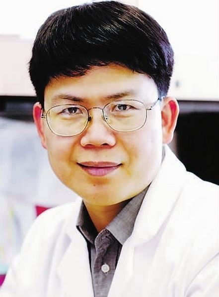

|  | |
|
刘国恩：美国北卡罗莱纳大学终身教授，著名卫生经济学家，北大光华管理学院教授
查涛：2011年全球经济学家排名487位（其中华人共有10人入选，位列第4）美联储亚特兰大分行高级研究员、美国《经济计量学（Journal of Econometrics）》副总编，《宏观经济学动态（Macroeconomic Dynamics）》副总编，《应用经济计量学（Journal of Applied Econometrics）》副总编
王立彦：北京大学国际会计与财务研究中心主任，北大光华管理学院教授
李义平：中国人民大学经济学院教授，博士生导师，北京大学第一个经济学博士后。被称为经济学界的“进京三杰”
卓志：山东财经大学校长
丁任重：四川师范大学党委书记
边慧敏：西华大学党委书记
宋献中：暨南大学副校长
赵昌文：国务院发展研究中心企业研究所所长
王海忠：中山大学管理学院教授，中国品牌战略研究中心主任
王自力：研究员，教授。中国人民银行研究生部部务委员会副主席，人民银行培训学院院长
陈豹隐：原西南财经大学教务长，1956年评为国家一级教授。《资本论》的第一个中文译者和早期传播者，被誉为经济学界的“南陈北马（马寅初）”
谢霖：中国会计改革的先驱，中国会计师制度的拓荒者，中国第一个注册会计师
彭迪先：治学务求真知，新中国成立后第一部马克思主义货币银行信用理论专著的作者
梅远谋：留法博士，马寅初特聘金融学者
汤象龙：中国近代经济史学的开拓者，与著名史学家吴晗等发起成立史学研究会，任会长。足足花了18年时间完成经济史学巨著《中国近代海关税收和分配统计》
刘洪康：大师风范勉来者，主编中国第一部《人口手册》，主编中国第一部大型人口专著《中国人口》
刘诗白：不做书斋的学者，是中国较早提出社会主义所有制多元性的学者之一
王叔云：德高望重一学者，中国农业宏观经济管理学的创立者
吴世经：学贯中西：德被后人，是在中国普及市场营销学的开拓者之一
许廷星：“国家分配论”创立者
吴忠观：中国人口经济学的拓荒者，首先提出并论证了建立和发展质量人口学的必要性
曾康霖：师道之高品：学问以穷究，“中国金融学科终身成就奖”获得者
毛有碧：贵阳学院院长
二、党政界
1、部分中央财经系统领导
原国家审计署审计长、联合国审计委员会主席：刘家义
原中央财办副主任、农办主任，中国扶贫基金会会长：段应碧
中国证监会副主席：庄心一
中国证监会副主席：刘新华
中国证监会副主席：姜洋
中国银监会副主席：周慕冰
国务院扶贫开发领导小组办公室党组成员、副主任：洪天云
中国证监会主席助理：张育军
中国保监会主席助理：黄洪
国家审计署副审计长：孙宝厚
中国人民银行纪委书记：王华庆
原中国人民银行研究局局长、反洗钱局局长、中国金融学会秘书长：唐旭
原中国进出口银行董事长、行长：李若谷
中央财经领导小组办公室副主任：唐仁健
中国农业银行董事长：蒋超良（2005年度国际金融风云人物，原国家开发银行行长，交通银行董事长，他领导的交通银行成为国内第一家完成“重组-改制-上市”三部曲的国有大型商业银行）
中国太平保险集团董事长：王滨
2、部分地方领导
中共山东省委书记：刘家义
中共湖北省委书记：蒋超良
甘肃省委副书记、代省长：唐仁健
四川省委常委、常务副省长：王宁
上海市委常委、组织部部长：吴靖平
西藏自治区党委常委、组织部部长、区政府国资委党委书记：曾万明
天津市副市长、天津自贸试验区管委会主任：阎庆民
湖南省副省长：杨光荣
贵州省副省长：钟勉
全国政协副秘书长：刘家强
四川省政协副主席：陈文华
四川省政协副主席：赵振铣
原四川省政协副主席：解洪
重庆市政协副主席：吴家农
重庆市政协副主席：黄立沛
原全国工商联党组副书记、副主席：黄小祥
原四川省委副书记、省长：魏宏
原江西省委常委，省委秘书长：赵智勇
四川省内江市委常委、市国资委党委书记：谢和友
四川省资阳市委常委、秘书长：陈轲
四川省第十二届人大常委会教育科学文化卫生委员会主任委员：涂文涛
四川省成都市委常委、常务副市长：朱志宏
重庆市国有资产监督管理委员会党委书记、主任：胡际权
山东省银监局党委书记、局长：陈育林
三、工商界
1、部分工商业及金融企业领导
华晨系缔造者：仰融（传奇人物“资本枭雄”，让社会主义国家股票在纽约证券交易所挂牌上市的第一人）
北京银行董事长：阎冰竹（2006中国银行业年度人物）
北京银行行长：严晓燕（2007年度中国十大金融人物）
中国建筑工程总公司（中国建筑）总经理：官庆
中国节能环保集团（中国节能）总经理：王彤宙
中国出口信用保险公司（中国信保）副总经理：刘永信
中国太平保险集团副总经理：孟昭亿
浦银安盛基金董事长、浦东发展银行副行长：姜明生
原广发银行行长、现任招商银行副行长：张光华
平安银行监事长：邱伟
平安银行副行长：冯杰
原光大永明人寿董事长：许斌
光大永明人寿副总经理：谭茗予
泛华保险服务集团董事长、普益财富董事长：胡义南（亚洲第一家登陆美国纳斯达克的保险中介企业）
中英人寿保险有限公司总裁：张文伟
中国太平洋财产保险公司副总经理：盛亚峰
中国平安财产保险公司副总经理：徐斌
泰康人寿创始人之一、原人保资产总裁、现弘泰恒业投资集团董事长：任道德
上海黄金交易所理事长、总经理：王喆
中国金融期货交易所副总裁：宋安平
易方达基金创始人、董事长：叶俊英
华安基金董事长：朱仲群（2007东亚经济新锐人物）
原广发证券总裁：李建勇
国信证券副总裁：孙煜扬
东海证券董事长：朱科敏
西南证券董事长：蒋辉
华西期货董事长、华西证券副总裁：胡小泉
厦门证券董事长：苏金龙
信诚基金副总经理、首席投资官：岳爱民
青岛银行董事长、行长：张广鸿
成都银行行长：田茂华
重庆银行行长：甘为民
富滇银行董事长：夏蜀
华融湘江银行董事长：刘永生
华融湘江银行行长： 雷志卫
中国多金属矿有限公司CEO：朱晓林（2012年《福布斯》中国企业CEO薪酬榜第一名，年收入2.35亿）
中国对外建设总公司总裁：焦志刚
大陆希望集团总裁：陈斌（2007中国营销年度标志人物）
云天化集团党委副书记：段文翰
原万科集团副总、现任深国企董事长兼总经理：冯佳 （王石三顾冯佳，万科三进三出）
铸信集团董事长：曾永江
深圳地铁集团公司董事长：林茂德
原中国金融出版社社长：林铁钢（已调任中国人民银行天津分行行长）
华东电脑董事长：游小明
蓝光集团董事长：杨铿
蓝剑集团党委书记：曾宪友
广东省农村信用联社理事长：罗继东
香港正道集团资深副总裁：朱胜良（与仰融一起造车）
首都时代集团总裁：王小兰（首都巾帼十杰）
2005年胡润中国富豪榜榜单人物，银河集团董事长：潘琦